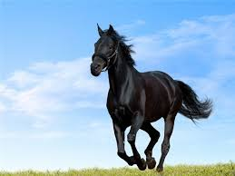

ცხენი (ლათ. Equus) — კენტჩლიქოსანი ცხოველების გვარი ცხენისებრთა ოჯახისა. ველური ცხენი გავრცელებული იყო ევროპაში (ამჟამად ამომწყდარია), აზიასა და აფრიკაში. მოიცავს ოთხი ქვეგვარის 7 სახეობას და მათ ქვესახეობებს: 1. ნამდვილი ცხენი (გარეული ცხენი), 2. ვირი (აფრიკული ველური ვირი, ნუბიური ვირი, კანჯარი, კიანგი), 3. ზებრა (მთის ზებრა, ბარის ზებრა), 4. Dolichohippus (გრევის ზებრა). ამჟამად ცხენის გარეული სახეობების უმრავლესობა ამომწყდარია, ხოლო გადარჩენილები კანონითაა დაცული.
